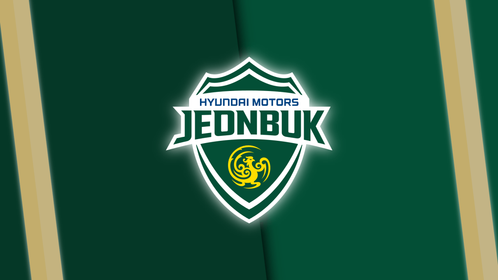

JEONBUK HYUNDAI MOTORS

Korea Football Guide
JEONBUK HYUNDAI MOTORS
FOOTBALL CLUB HISTORY
1990
2000
2010
2020
연도별 역사
1990
2000
2010
2020
1994
전북다이노스 축구단 창단
1995
아디다스컵 4위
하이트배 코리안리그 후기 4위
하이트배 코리안리그 전기 7위
하이트배 코리안리그 후기 4위
하이트배 코리안리그 전기 7위
1996
프로축구 페어플레이상 수상
라피도컵 정규리그 전기 5위
아디다스컵 7위
라피도컵 정규리그 후기 7위
라피도컵 정규리그 전기 5위
아디다스컵 7위
라피도컵 정규리그 후기 7위
1997
프로축구 공격상 수상
구단 명칭 변경(전북현대 다이노스)
라피도컵 정규리그 6위
구단 심볼마크 변경
구단 명칭 변경(전북현대 다이노스)
라피도컵 정규리그 6위
구단 심볼마크 변경
1998
아디다스 코리아컵 B조 4위
현대컵 k-리그 6위
필립모리스코리아컵 7위
현대컵 k-리그 6위
필립모리스코리아컵 7위
1999
제 4회 FA컵 준우승
현대자동차 직영구단으로 전환
춘계실업축구연맹 준우승
바이코리아컵 k-리그 7위
구단주 정몽구 회장 취임
현대자동차 직영구단으로 전환
춘계실업축구연맹 준우승
바이코리아컵 k-리그 7위
구단주 정몽구 회장 취임
2000
K리그 정규시즌 첫 5위
2003
FA컵 준우승
2005
구단하우스 준공
FA컵 우승(첫 메이저 대회 우승)
FA컵 우승(첫 메이저 대회 우승)
2006
AFC 챔피언스리그 우승 (한국 최초 AFC 우승)
FIFA 클럽월드컵 참가
FIFA 클럽월드컵 참가
2008
K리그 플레이오프 진출
2009
K리그 정규리그 우승 (리그 첫 우승)
최우수선수(MVP) 이동국
최우수선수(MVP) 이동국
2010
K리그 정규시즌 3위
2011
정규리그 1위
AFC 챔피언스리그 준우승
k리그 통합우승
AFC 챔피언스리그 준우승
k리그 통합우승
2012
k리그 준우승
FA컵 8강
FA컵 8강
2013
k리그 3위
FA컵 준우승
AFC 16강
FA컵 준우승
AFC 16강
2014
AFC 챔피언스리그 우승 (한국 최초 AFC 우승)
FIFA 클럽월드컵 참가
FIFA 클럽월드컵 참가
2015
k리그 통합우승
FA컵 16강
AFC 8강
FA컵 16강
AFC 8강
2016
k리그 준우승
FA컵 8강
AFC 챔피언스리그 우승
FA컵 8강
AFC 챔피언스리그 우승
2020
K리그 우승 (8회차, 4연패 달성)
FA컵 우승
FA컵 우승
2021
K리그 2위, AFC 챔피언스리그 8강
2022
K리그 2위, 감독 김상식 경질
조기성, 송민규 활약
조기성, 송민규 활약
2023
AFC 챔피언스리그 8강 진출
클럽 유튜브·지역 연계 마케팅 강화
클럽 유튜브·지역 연계 마케팅 강화
2024
감독단 개편, 세대교체 본격화
지역 밀착형 아카데미 확대
지역 밀착형 아카데미 확대